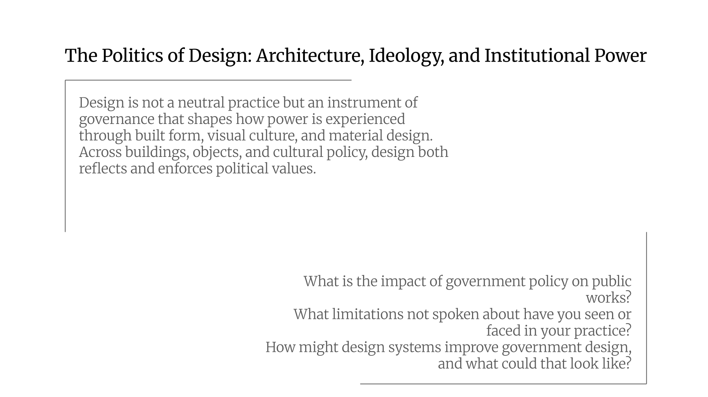
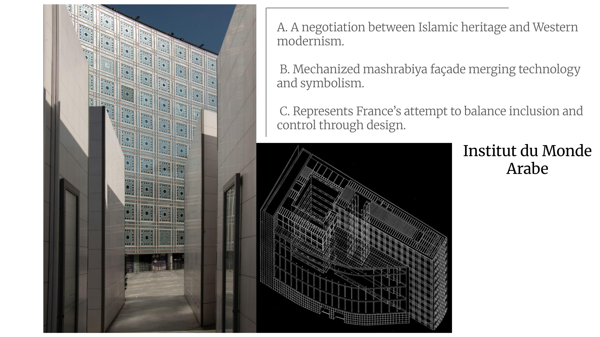
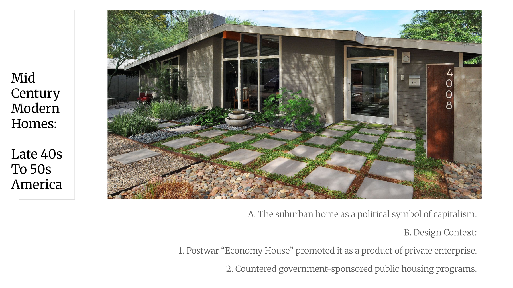
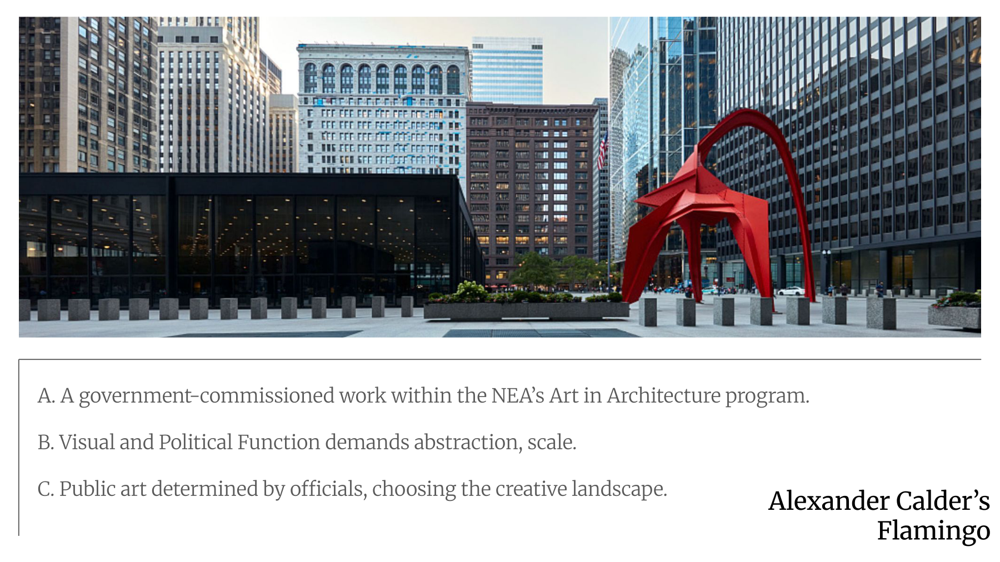
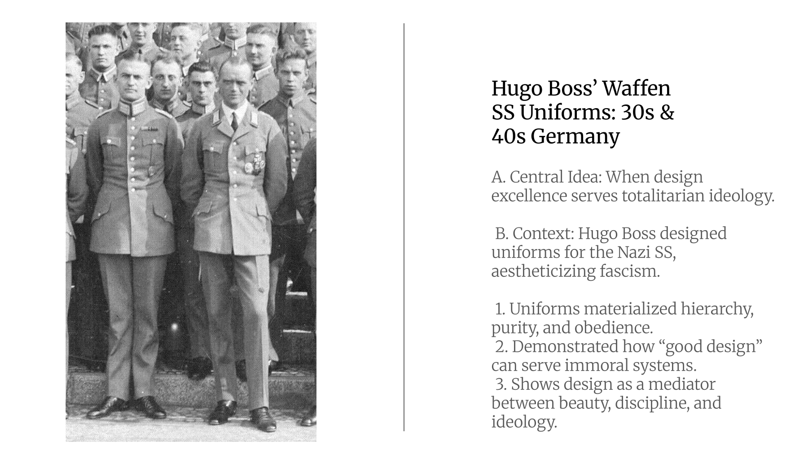
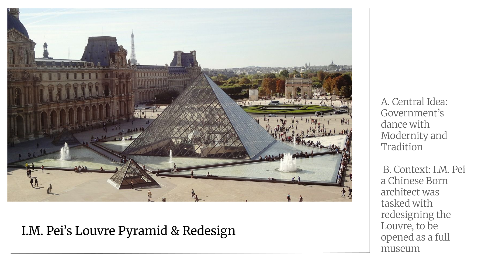
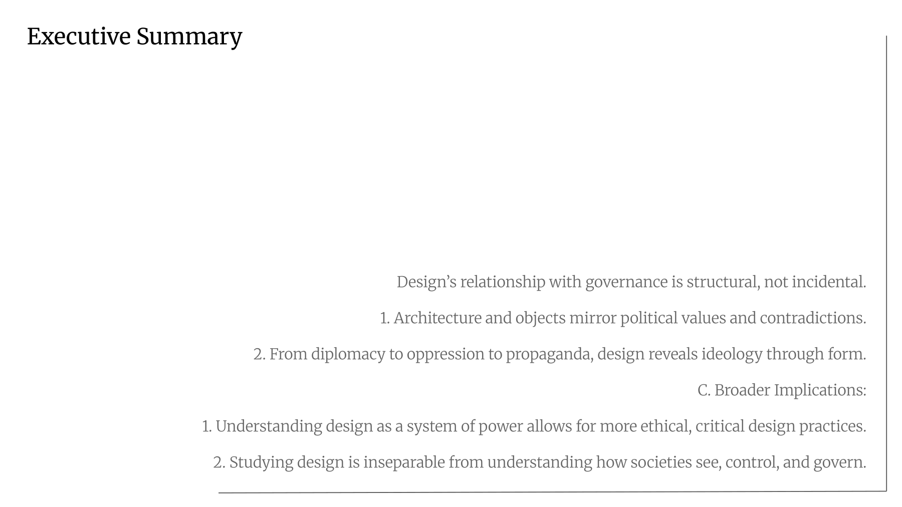

Architecture · Political Theory · Design Culture
An investigation into how architecture, urban planning, fashion, and public art operate as instruments of governance—shaping how citizens encounter the state and how ideology becomes material.
Thesis
Design operates as an instrument of governance. It shapes the ways citizens encounter institutions, how ideologies become material, and how state power is experienced through images, objects, and built environments. Across architecture, fashion, urban planning, and cultural policy, design enforces political values even when it appears neutral or decorative. The sites and objects examined in this research—including the Institut du Monde Arabe, the J. Edgar Hoover Building, the mid-century suburban home, Alexander Calder’s Flamingo, and Hugo Boss’s Waffen-SS uniforms—reveal the entanglement between design and systems of authority. When expanded to include the Louvre Pyramid, the CCTV Headquarters in Beijing, Brasília, and the European Parliament Building, this body of material shows how design has operated across the twentieth and twenty-first centuries as a medium of both representation and regulation.

Institut du
Monde Arabe
The Institut du Monde Arabe in Paris is one of the clearest demonstrations of architecture’s ability to perform cultural diplomacy while enacting control. Designed by Jean Nouvel and completed in 1987, the building’s southern facade consists of hundreds of mechanical apertures inspired by the mashrabiya screens of traditional Islamic architecture. These devices respond to changing light conditions through a system of diaphragms. Their movement resembles the opening and closing of camera lenses. The facade becomes a visual machine that performs a vision of Arab identity translated into the language of French technological modernism.
As Gaymon Bennett argues in Technicians of Human Dignity, institutions often convert moral ideals into administrative techniques. The Institut does precisely this by turning cultural difference into a regulated optical system. Its performance of recognition and inclusion depends on a technological frame, one that is administered by the French state. The building celebrates cultural exchange while keeping it within the bounds of a secular French universalism.
As scholars like Timothy Mitchell have noted, modern institutions frequently stage cultural encounters in ways that mask the asymmetries of power that underlie them. The Institut du Monde Arabe presents the appearance of openness yet contains the representation of Arab culture within a distinctly Western design logic. Although the building appears diplomatic, it defines the terms under which Islamic identity may be seen and interpreted. It offers visibility without sovereignty. The facade’s choreography of light dramatizes this duality. Cultural difference is technically displayed and technically contained.

J. Edgar Hoover
Building
A different configuration of design and authority appears in the J. Edgar Hoover Building. Completed in 1975 and designed by Charles Murphy and Associates, the building embodies the ethos of surveillance and secrecy associated with the Federal Bureau of Investigation. The structure employs the heavy, imposing concrete masses associated with brutalism. These forms communicate solidity, severity, and opacity. The building’s blank walls and recessed windows suggest an institution that watches without being watched.
Tuuli Mattelmäki and colleagues have described the rise of empathic design as an attempt to foreground compassion and user experience within design practice. The Hoover Building offers a dark parallel to this idea. It demonstrates how design can express institutional emotions in service of domination rather than care. The building materializes the affective atmosphere of fear, intimidation, and bureaucratic moral certainty.
Reinhold Martin has written about the political nature of postwar architectural modernism, noting that administrative buildings often use monumental forms to legitimize authority. The Hoover Building exemplifies this phenomenon. Its weight and scale represent not democratic transparency, but the moral rigidity of the intelligence apparatus. Architectural form becomes a tool for shaping public emotion. Instead of fostering empathy, the building uses affect as a means of enforcing obedience. Through its physical presence, the building naturalizes the authority of the institution it serves.
The Suburban
Home
While the Hoover Building embodies authoritarian control, the mid-century suburban home expresses governance through desire. Elaine Stiles’s analysis of the postwar American economy house reveals how domestic architecture and consumer goods functioned as ideological weapons in the struggle between capitalist and socialist visions of modern life. Suburban developers marketed modern homes as proof that private enterprise could solve the nation’s housing crisis more effectively than state intervention. The modest ranch house, with its efficient floor plan, open living spaces, and standardized materials, became a symbol of individual prosperity and self-sufficiency.
As scholars such as Dolores Hayden and Dianne Harris have shown, the suburban ideal was deeply intertwined with racial exclusion, discriminatory mortgage policies, and Cold War anxieties. The architecture of the single-family home was never neutral. It expressed a political and economic ideology in material form.
The suburban home demonstrates Michel Foucault’s concept of governmentality, in which power operates through the shaping of everyday behavior rather than direct coercion. The design of the home encouraged domestic routines that aligned with middle-class capitalist values. The kitchen’s work triangle promoted efficiency. The large picture window encouraged surveillance of the street. The private backyard represented personal ownership and escape from the collective. These features created subjects who internalized the values of individual responsibility and consumer citizenship. The suburban home was a tool of governance disguised as a symbol of independence.

Calder’s
Flamingo
The entanglement of aesthetics and power also appears in the federal government’s commissioning of public art. Alexander Calder’s Flamingo, installed in Chicago’s Federal Plaza in 1974, was the first major project funded through the General Services Administration’s Art in Architecture program. The bright red steel sculpture, abstract and monumental, was intended to soften the rigid geometry of the surrounding government buildings.
As Amy Sabrin argues, government arts funding always raises questions about the relationship between patronage and autonomy. Calder’s Flamingo appears apolitical, yet its very neutrality serves a political purpose. It presents an image of democratic pluralism and cultural vitality within a federal landscape that might otherwise seem impersonal or oppressive.
Francis Hodsoll’s reflections on the NEA during the 1980s underscore the tensions inherent in government involvement in the arts. Flamingo, with its abstract form and cheerful color, aligns with a particular vision of culture that avoids controversy and affirms national unity. In this sense, abstraction becomes a political tool. It allows the government to sponsor art that appears universal while subtly reinforcing the values of order, stability, and civic harmony.

Hugo Boss &
the Waffen-SS
At the most extreme end of political aesthetics lie the uniforms designed for the Waffen-SS by the Hugo Boss company. These garments illustrate Teal Triggs’s critique of design history, which often neglects the political implications of aesthetic innovation. The SS uniforms were meticulously tailored, visually striking, and deliberately intimidating. They merged modern fashion with authoritarian ideology.
Scholars such as Jeffrey Herf and Claudia Koonz have shown how Nazi propaganda relied on the coordination of imagery, typography, clothing, and architecture to create an all-encompassing visual regime. The uniforms functioned not only as symbols of power, but as devices that shaped behavior and identity. Their elegance contributed to the seductive appeal of fascism. Design became a mechanism for producing obedient subjects and projecting the myths of racial superiority.

The Louvre
Pyramid
The role of design in constructing national identity is also evident in the Louvre Pyramid, created by I. M. Pei in 1989 as part of President François Mitterrand’s program of monumental public works. The glass and steel structure stands in stark contrast to the historic stone facades of the Louvre Palace. Pei sought to create a modern entrance that would improve visitor circulation while signaling France’s commitment to contemporary cultural leadership.
Scholars such as Neil Levine and Sarah Williams Goldhagen have analyzed the pyramid’s symbolic significance, noting that its geometric clarity reflects Enlightenment ideals of reason and order. At the same time, the pyramid became a site of controversy. Critics accused the French government of desecrating national heritage. Supporters argued that the structure represented a confident, modern France. The debate surrounding the pyramid revealed how architecture can become a stage for negotiating national narratives. The building asserts the authority of the state to reinterpret cultural history on its own terms.

CCTV
Headquarters
A similar interplay of openness and control appears in the CCTV Headquarters in Beijing, designed by Rem Koolhaas and OMA. Completed in 2012, the building houses China Central Television, the state’s primary media apparatus. Its dramatic looping form rejects the vertical hierarchy of traditional skyscrapers in favor of a continuous circuit. Koolhaas has described the building as a new model for high-rise architecture.
Yet scholars such as Xiaoxuan Lu and Beatriz Colomina interpret the structure as a theatrical manifestation of state power. The building’s transparency, achieved through extensive glass surfaces, presents an image of accessibility and modernity. However, the institution housed within it is one of the most tightly controlled media organizations in the world. The architecture stages a fantasy of openness while concealing the mechanisms of censorship and propaganda. Like the Hoover Building, the CCTV Headquarters materializes ideology. It transforms surveillance culture into an architectural spectacle.
Brasília
Brasília offers another example of design as political aspiration and social engineering. Planned by Lucio Costa and designed largely by Oscar Niemeyer, the city was inaugurated in 1960 as the new capital of Brazil. It embodied the modernist ideal that architecture and urban planning could create a more equitable society. The city’s monumental axis, vast open plazas, and sculptural government buildings symbolized national progress and democratic promise.
Yet, as James Holston has shown, Brasília’s rationalist design produced new forms of inequality. The city’s zoning policies separated residential, commercial, and governmental functions into discrete sectors. The reliance on automobiles marginalized the workers who built the city, many of whom were forced to live in distant satellite towns. The attempt to create a modern utopia resulted in spatial segregation. Architecture revealed its inability to resolve social contradictions through form alone.
European
Parliament
The European Parliament Building in Strasbourg continues this exploration of the symbolic politics of design. The structure’s incomplete cylindrical form and transparent facade suggest that European democracy is a work in progress. Architectural critics such as Barbara Miller Lane argue that the building’s design functions as a visual metaphor for the project of European integration. The extensive use of glass implies transparency and openness.
Yet the interior is notoriously confusing, with labyrinthine corridors and restricted areas that complicate access. The building performs the ideals of democratic governance while masking the bureaucratic complexities and tensions that characterize the European Union. As with Calder’s Flamingo or Pei’s Pyramid, abstraction becomes a means of reconciling conflicting identities and legitimizing institutional authority.

Conclusion
Across all of these examples, design emerges as a political technology that shapes how individuals understand themselves and their relationship to the state. Bennett’s theological account of dignity highlights the role of institutions in defining intrinsic worth. Stiles’s analysis of the economy house shows how domestic architecture can express economic ideology. Sabrin’s discussion of arts funding reveals the state’s influence on cultural production. Julier’s articulation of design culture offers a framework for understanding how aesthetic practices intersect with political meaning.
Understanding design as a form of governance allows us to see how spatial and visual systems regulate bodies, construct identities, and shape political reality. In the hands of the state, empathy becomes surveillance, modernism becomes capitalism, and abstraction becomes control. Design’s entanglement with governance is structural. From diplomatic facades to authoritarian headquarters, from suburban domesticity to architectural utopianism, design reveals the values and contradictions of its political moment. To analyze design is therefore to interrogate the moral architecture of society itself. Design is policy made visible. Its objects are arguments, its images are ideologies, and its history is inseparable from the governments that shape and are shaped by it.
Works Cited